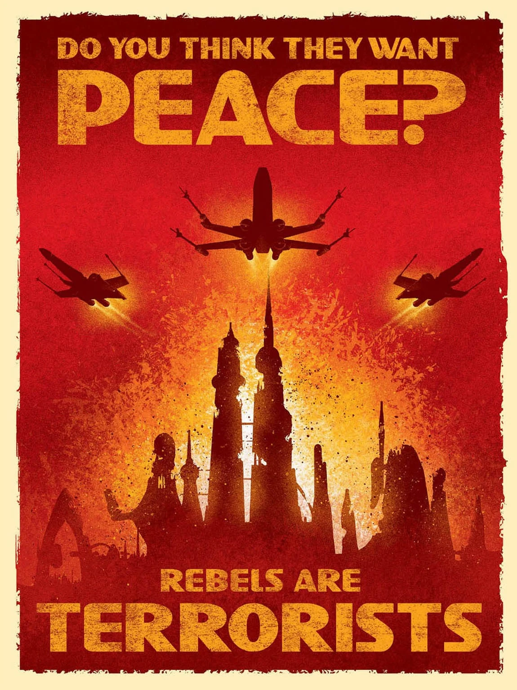

Állj be a Galaktikus Birodalomhoz!

A birodalmi hadigépezet növekedése következtében a regionális katonai kiképzőintézmények nagy átalakuláson mentek keresztül. A Köztársaság idejében nem létezett egységes haderő, amely megvédelmezhette volna a Galaxist!
A Birodalom fegyveres erőit önkéntes polgárok alkotják a klónkatonák helyett. A zászlók, hagyományok, jelképek helyére a rohamosztagosok uniformitása kerül.
A Birodalom örököseként Thrawn főadmirális azonnal megbízta Pellaeon kapitányt az Árnyék Tanács vezetésével, hogy megőrizze a birodalmi értékeket és megszilárdítsa az igazi rendet. A hatalomátvétel után Pellaeon továbbra is parancsnoki tisztet visel a híres Chimaera hadihajón, hogy továbbra is irányítása alatt álljon a birodalmi flotta.
Pellaeon kapitány azonban nem pihenhet a babérjain, mert nagy erőkkel készül harcolni az Új Köztársaság megbuktatásáért, amely megpróbálja lerombolni a birodalmi rendet és elvenni a hatalmat a Birodalomtól. De az Árnyék Tanács vezetése alatt Pellaeon és a birodalmi hadsereg megvédi az igazságot és a béke iránti vágyat.
Ez a hír nagy jelentőséggel bír az egész galaxis számára, és üzenetet közvetít azoknak, akik megkérdőjelezik a birodalmi rendszer értékeit. A birodalmi hatalom és a hűség megőrzése mindig is fontos volt a birodalom számára, és most, hogy Pellaeon kapitány az Árnyék Tanács vezetője, nincs oka a félelemre vagy a bizonytalanságra. Az igazi rend mindig győzedelmeskedik!
Birodalmi Információs Minisztérium